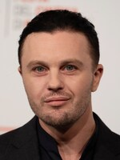

Àstrid Bergès-Frisbey (born 26 May 1986) is a French-Spanish actress and model. She is best known for playing Suzanne in The Sea Wall, the mermaid Syrena in Pirates of the Caribbean: On Stranger Tides and Sofi in I Origins. She received the Prix Suzanne Bianchetti in 2009 and the Trophée Chopard Award for Female Revelation of the Year at the 2011 Cannes Film Festival and a nomination at the 2016 David di Donatello in Rome.
Michael Carmen Pitt (born April 10, 1981) is an American actor, model and musician. Pitt is known in film for his roles in Murder by Numbers (2002), Bernardo Bertolucci's The Dreamers (2003), Gus Van Sant's Last Days (2005). He played the role of Ian Gray in I Origins.
Yeun Sang-yeop (born December 21, 1983), known professionally as Steven Yeun, is a South Korean-born American actor and producer. Yeun initially rose to prominence for his roles as Glenn Rhee in the television series The Walking Dead (2010–2016) and Ben in the film Burning (2018). The latter earned him critical acclaim and several accolades. He also starred in and executive produced Minari (2020), earning him critical acclaim and a nomination for the Academy Award for Best Actor, becoming the first Asian American actor to receive this honor.
Brit Heyworth Marling (born August 7, 1982) is an American actress and screenwriter. She rose to prominence after starring in several films that premiered at the Sundance Film Festival, including Sound of My Voice (2011), Another Earth (2011), and The East (2013), each of which she co-wrote in addition to playing the lead role. She co-created, wrote, and starred in the Netflix series The OA, which debuted in 2016.